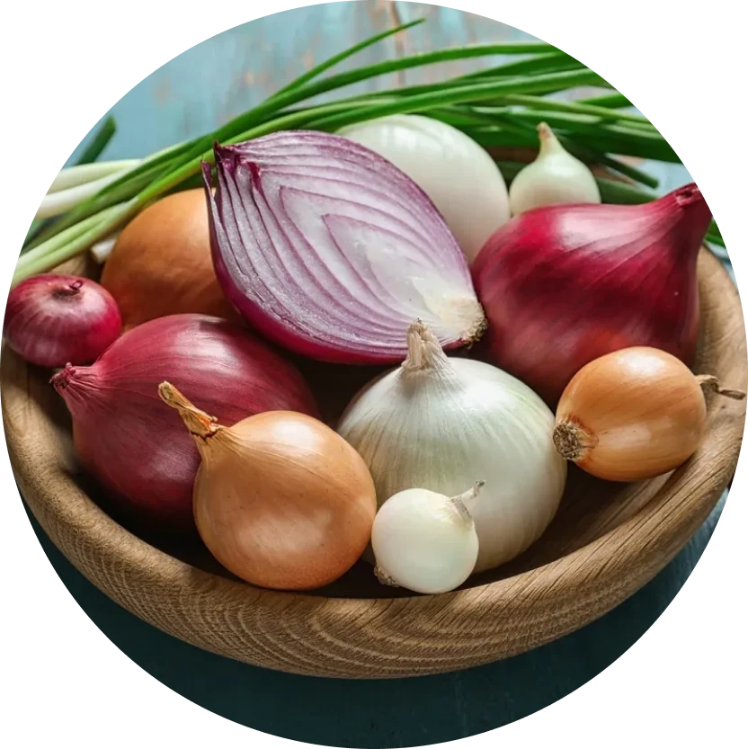
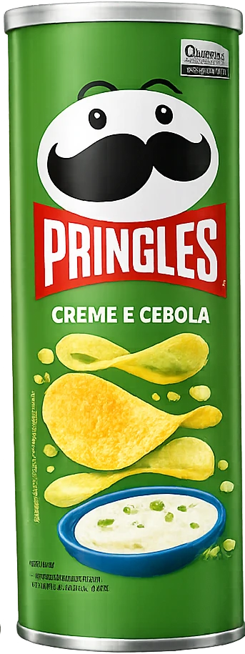
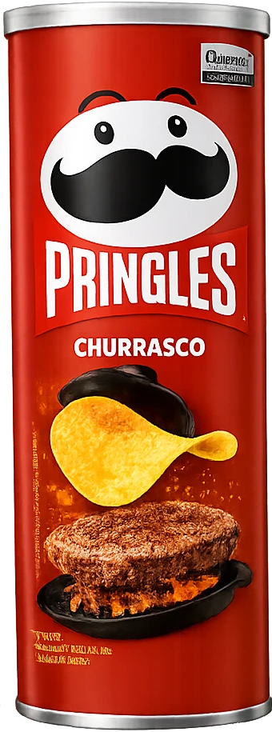
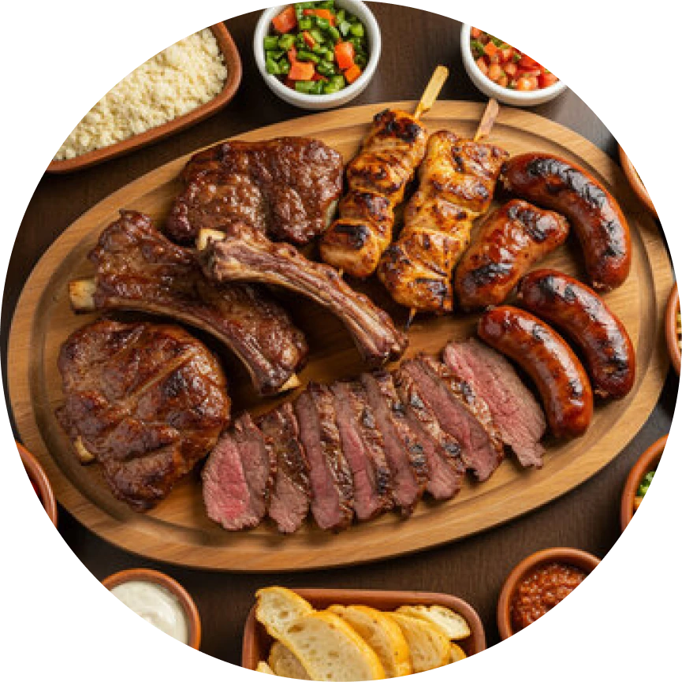
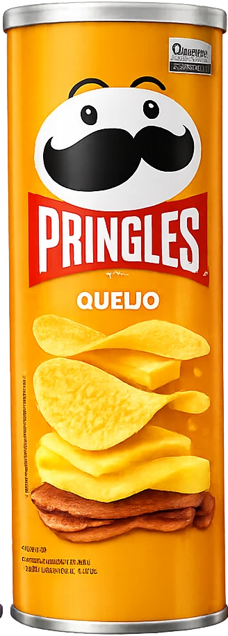
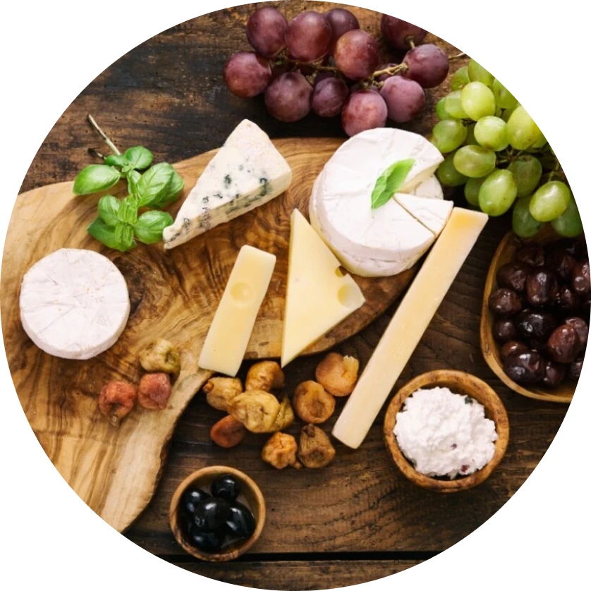
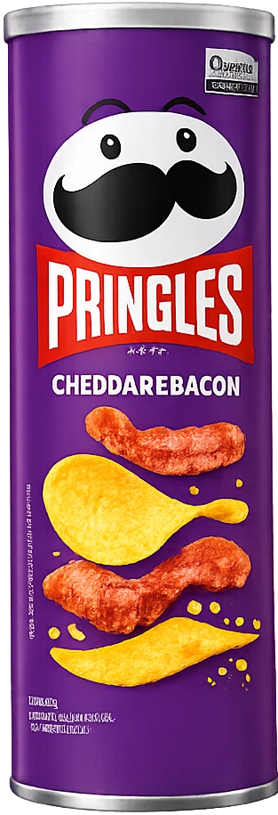
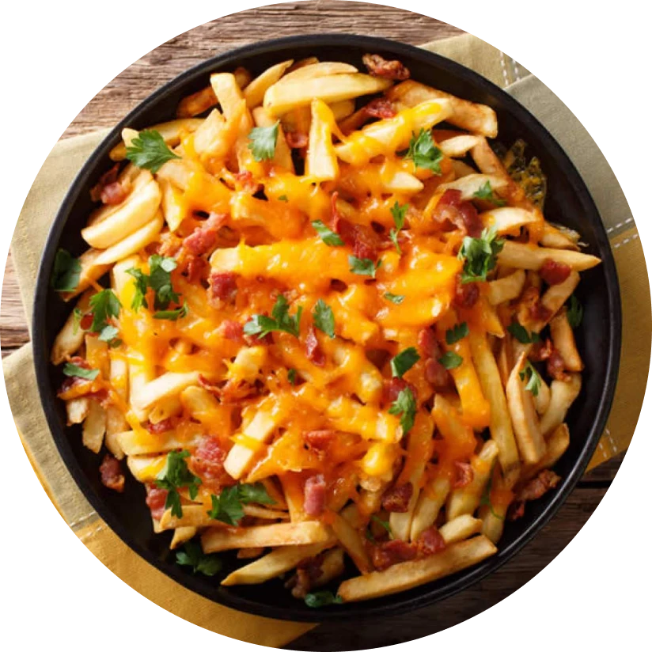

Uma combinação clássica e irresistível: o sabor suave e cremoso se mistura com o toque marcante da cebola, criando uma experiência rica e equilibrada a cada mordida.



Inspirado no sabor marcante do churrasco, essa versão traz um equilíbrio perfeito entre o defumado e o tempero levemente adocicado. Intenso e envolvente, é a escolha ideal para quem gosta de um sabor forte e inesquecível.


Cremoso e irresistível, esse sabor entrega toda a intensidade do queijo em cada batata. Com um toque suave e ao mesmo tempo marcante, é perfeito para quem busca uma experiência rica, aconchegante e cheia de sabor.


Uma combinação irresistível: o sabor cremoso e intenso do cheddar se une ao toque defumado e marcante do bacon. Rico e cheio de personalidade, é perfeito para quem busca uma explosão de sabor a cada mordida.